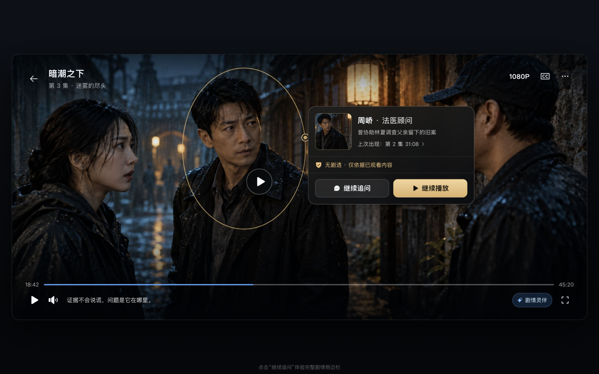
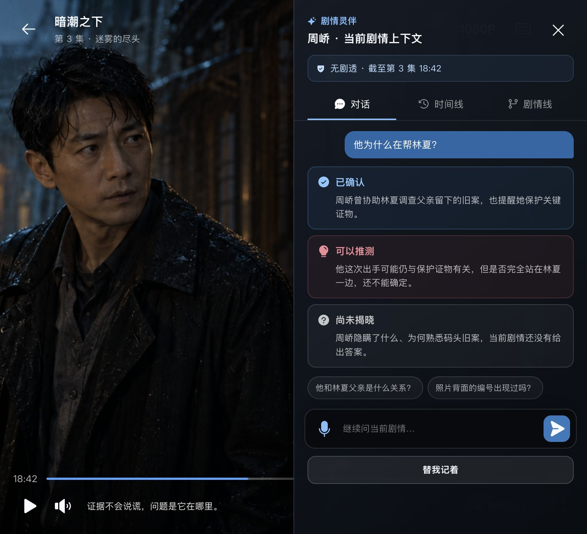
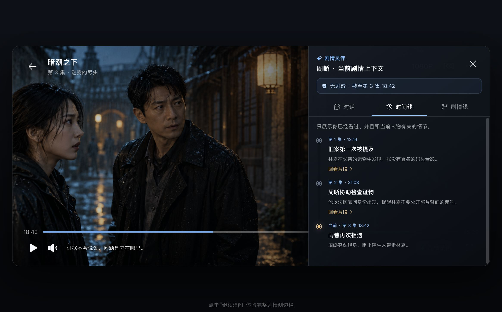
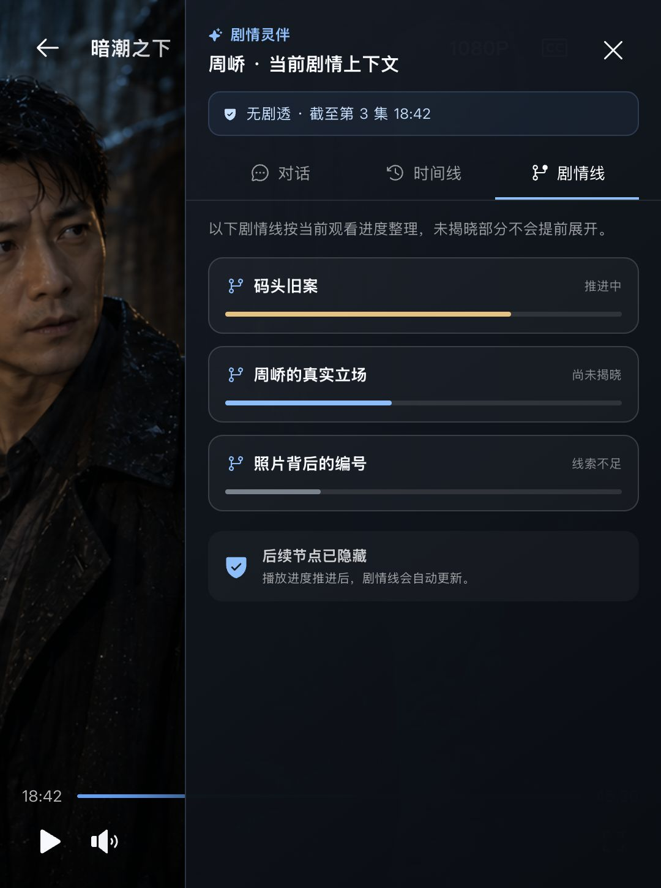
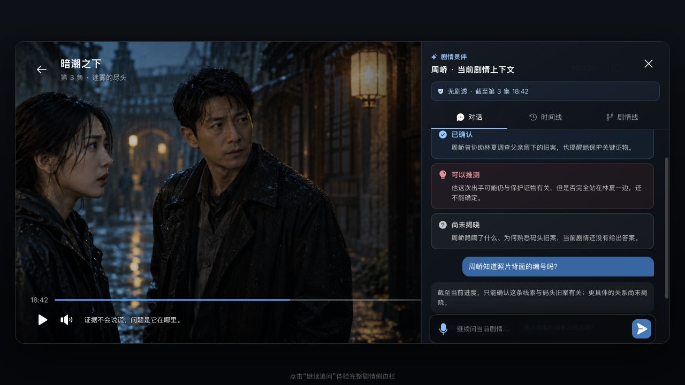

Tencent AI Product Practice · Experience Specification
产品体验说明
说明 AI 如何进入观看过程、承接不同理解需要，并明确产品、设计与研发共同保护的体验边界。
文档目的：帮助产品、设计与研发共同理解 AI 如何进入观看过程、如何判断和承接用户需要，以及每一步需要呈现、传递和保护什么。
当前状态：基于已确认的产品定位与已完成 Demo 形成的体验规格；真实用户频率、现网能力和业务收益仍待验证。
上游依据：用户问题与产品定位说明 V2
交互样例：本地 Demo
01一句话体验
目标体验是：当用户在看剧过程中突然“接不上”时，AI 能获得用户正在观看的剧集、时间点、当前画面与已观看范围；用户只需在暂停态轻点一次，就能获得严格限定在当前进度内的解释，并从原位置继续播放。
用户完成的不是一次 AI 对话，而是：
发现理解断点 → 低成本获得必要说明 → 恢复理解 → 继续观看。
02体验目标与非目标
体验目标
- AI 在问题发生的现场准备上下文，不要求用户重新描述剧名、人物和进度。
- AI 先提供低打扰入口，是否展开由用户决定。
- 回答严格区分“已确认、可以推测、尚未揭晓”，不把推断包装成事实。
- 解释结束后，用户可以回看片段、继续追问、暂存线索或直接恢复播放。
- AI 的存在感像一个理解当前情境的“剧情灵伴”，但不抢夺视频主界面。
本阶段不解决
- 播放全程自动讲解或频繁主动弹出。
- 当前观看进度之后的剧情、结局或未来人物关系。
- 角色扮演、高频情感陪伴、角色声音或形象的二次生成。
- 完整影视百科、社区讨论或内容推荐。
- 用通用聊天框替代观看体验。
03核心用户与高优先级时刻
核心用户是正在观看人物关系复杂、线索密集、叙事跨度长或时间线非线性的连续剧用户，尤其是间隔追更、同时追多部剧、偶尔分心，又不愿离开播放器搜索的人。
基础版本优先承接：
| 用户需要 | 典型问题 | AI 应对 | 优先级 |
|---|---|---|---|
| 记忆断层 | “这个人之前出现过吗？” | 恢复与此刻直接相关的已观看前情，并标明出处 | P0 |
| 事件与人物关系遗忘 | “他和女主是什么关系？” | 给出关系、相关事件和最近一次出现位置 | P0 |
| 当前内容没理解 | “他为什么突然帮她？” | 先陈述事实，再给有限推测 | P0 |
| 信息遗漏 | “刚才说了什么？” | 简述刚才片段，优先提供短距离回看 | P1 |
| 尚未揭晓 | “他是真凶吗？” | 明确说明当前没有答案，阻断后续剧情 | P0 安全要求 |
| 深度探索 | “这和前面哪个细节呼应？” | 仅在用户主动展开时提供 | P2 |
04AI 进入观看过程的原则
AI 不直接判断“用户没看懂”，只判断“此刻是否适合提供一个可忽略的帮助入口”。
| 观看状态 | 可观察信号 | AI 默认行为 | 用户看到什么 | 禁止行为 |
|---|---|---|---|---|
| 正常播放 | 连续播放，无明显求助动作 | 在后台准备上下文，不主动展开 | 不出现完整回答 | 遮挡画面、主动朗读 |
| 用户暂停 | 当前画面稳定；可能是看人、读字幕或临时离开 | 识别当前人物与关键关系，显示轻量卡片 | 人物、关系、上次出现、“继续追问” | 把暂停直接等同于困惑 |
| 短距离回看 | 用户反复拖动或回退同一片段 | 可在控制区提供低优先级提示 | “需要梳理刚才发生了什么吗？” | 自动停止或强制弹窗 |
| 用户点击追问 | 意图已明确 | 打开侧边栏并带入当前上下文 | 对话、时间线、剧情线 | 要求用户重新输入剧集和人物 |
| 回答完成 | 用户已获得解释 | 提供继续追问、回看片段、替我记着、继续播放 | 清晰的下一步 | 把用户困在聊天状态 |
交互意象上可借鉴“灵宝式”体验中的三点：常驻但低打扰、需要时一键展开、持续理解上下文；不照搬角色扮演、拟人声音或高频打断。
05核心体验流程
5.1 暂停态：AI 先说明“我理解了什么”

暂停后，视频仍是绝对主界面。AI 只显示与当前画面直接相关的最小信息：
- 当前识别人物：姓名与身份。
- 与主角或当前事件的已知关系。
- 上次出现的集数和时间点，可定位回看。
- “无剧透 · 仅依据已观看内容”的明确承诺。
- 两个主操作：“继续追问”和“继续播放”。
如果识别置信度不足，不猜人物，改为显示“我还不能确认画面中的人物”，并允许用户选择画面人物或直接提问。
5.2 展开态：侧边栏承接不同类型的需要
侧边栏保留部分视频画面，让用户始终知道 AI 正在解释哪个现场。
对话

- 默认展示系统根据当前情境生成的高可能问题。
- 回答固定分为：已确认、可以推测、尚未揭晓。
- 用户可以点推荐问题、输入文字或使用语音继续追问。
- 长回答先给结论，再提供依据；默认不生成大段剧情复述。
时间线

- 只展示与当前人物或事件相关、且用户已经看过的节点。
- 每个节点必须有剧集、时间点、事件摘要和“回看片段”。
- 当前节点与历史节点视觉区分。
剧情线

- 展示与当前问题有关的线索主题及推进程度。
- 状态使用“推进中、线索不足、尚未揭晓”等语义标签。
- 未观看节点不展示标题、缩略图或暗示性文案。
5.3 追问与返回播放

用户提交追问后：
- 立即保留用户问题并显示“正在根据当前进度回答”。
- 回答继续遵守当前进度与事实分层。
- 关闭侧栏不改变原播放点。
- 点击继续播放后，从暂停时间点恢复，并给出轻量反馈。
06AI 上下文与回答契约
AI 最少需要知道
| 上下文 | 关键字段 | 用途 |
|---|---|---|
| 内容 | 内容 ID、剧名、集数、版本 | 锁定正确作品与版本 |
| 播放 | 当前时间点、已观看范围、跳看记录 | 建立剧透边界 |
| 当前现场 | 画面人物、字幕片段、镜头摘要 | 理解“此刻” |
| 剧情知识 | 人物关系、事件、线索及对应时间点 | 回答与引用依据 |
| 对话 | 本次问题、最近追问、用户已确认对象 | 保持连续追问 |
| 权限 | 地区、内容授权、可引用素材类型 | 控制剧照、字幕和片段使用 |
回答必须满足
- 所有事实都能定位到用户已观看范围内的剧情节点。
- 推测必须有显式标签，并说明依据与不确定性。
- 尚未揭晓时直接说明，不用未来信息“暗示答案”。
- 引用剧照、字幕或视频片段前先经过内容授权判断。
- 生成失败时不输出猜测性兜底答案。
建议的前后端数据对象
{
"watch_context": {
"content_id": "drama_001",
"episode": 3,
"position_sec": 1122,
"watched_until_sec": 1122,
"visible_characters": ["周峤", "林夏"]
},
"user_intent": "人物动机理解",
"answer": {
"confirmed": [],
"inferred": [],
"unknown": [],
"evidence_points": []
},
"spoiler_boundary": "episode_3@18:42",
"rights": {
"stills": true,
"subtitles": true,
"character_voice_generation": false
}
}字段名可随实际架构调整，但“观看边界、事实分层、证据点、素材权限”不能被省略。
从播放器事件到回答呈现
| 步骤 | 系统动作 | 设计侧需要表达 | 研发侧需要保证 |
|---|---|---|---|
| 1. 捕捉情境 | 接收暂停、回看或用户点击等事件 | 暂停不等于困惑，入口必须可忽略 | 事件只用于判断入口时机，不直接触发完整回答 |
| 2. 固化上下文 | 保存内容、剧集、时间点、已观看边界、字幕与当前人物 | 显示 AI 正在基于哪个进度理解 | 同一次追问使用同一份上下文快照，避免播放进度变化造成答非所问 |
| 3. 识别需要 | 结合入口和问题判断是人物、前情、遗漏、理解还是探索 | 推荐问题应与当前画面直接相关 | 允许意图不确定，不能用错误分类阻止用户自由提问 |
| 4. 剧透前置过滤 | 先按已观看边界过滤知识与素材 | 持续显示无剧透边界 | 检索阶段就排除未来内容，不能只依赖生成后的文本过滤 |
| 5. 检索证据 | 获取人物关系、事件节点、字幕或授权片段 | 时间线与“上次出现”必须可定位 | 每条事实保留内容 ID、剧集和时间点 |
| 6. 生成回答 | 按已确认、推测、未知组织结果 | 先结论后依据，控制长度 | 模型只能使用已过滤证据；无证据时降级为未知 |
| 7. 结果复检 | 检查剧透、事实分类、素材权限和敏感内容 | 错误时显示可恢复状态，不闪现不可信答案 | 失败结果不可进入前端正式回答区 |
| 8. 承接下一步 | 提供追问、回看、记住和继续播放 | 明确主路径仍是回到观看 | 保留原播放点，并记录恢复播放是否成功 |
建议的体验目标（待真实链路压测后确认）：暂停卡优先使用预计算信息并快速出现；侧栏点击后立即反馈加载状态；超过可接受等待时间时保留问题并允许重试，而不是让用户重复输入。
关键降级规则
- 人物识别置信度不足：不展示姓名与关系结论，改为候选选择或自由提问。
- 找不到可靠证据：回答“当前已观看内容中没有足够依据”，不根据完整剧情常识补全。
- 剧透过滤不确定：宁可少答，标记“尚未揭晓”，不输出可能暗示后续的细节。
- 剧照、字幕或片段无授权：保留原创文字摘要，隐藏受限素材和原声。
- 模型或检索超时：保留问题、上下文快照和当前播放点，提供重试与返回播放。
- 观看历史不可用：明确告知无法确定剧透边界，默认不展开剧情解释。
- 多人共用账号或跨设备续播：只使用服务端确认的已观看边界，不根据单一设备本地进度推断。
观看记录和对话内容属于用户行为数据。实现时应只传递完成本次解释所需的最小上下文，并遵守平台既有的数据留存、权限和删除规则。
07页面与系统状态
| 状态 | 界面表现 | 恢复方式 |
|---|---|---|
| 正在理解 | 显示正在对齐人物、字幕和已观看时间线 | 完成后进入侧栏 |
| 人物不确定 | 不显示具体姓名，提示选择或直接提问 | 用户选择人物 / 跳过 |
| 没有相关前情 | 明确“已观看内容中未找到直接关联” | 返回播放 / 换个问法 |
| 回答生成中 | 保留问题，显示生成状态 | 可取消或关闭侧栏 |
| 弱网或超时 | 保留问题与上下文，提示重试 | 一键重试，不重复输入 |
| 服务错误 | 不显示不可靠答案 | 重试 / 返回播放 |
| 内容受限 | 只给文字摘要，不展示受限剧照或原声 | 查看允许的文字说明 |
| 长内容 | 先结论后展开，侧栏内部滚动 | 折叠依据 / 跳到相关节点 |
| 用户继续播放 | 关闭解释并恢复原进度 | 播放中保持轻量入口 |
08关键功能需求
| 编号 | 需求 | 验收标准 |
|---|---|---|
| FR-01 | 暂停态人物与关系卡 | 不遮挡关键人物；显示当前进度内关系与剧透边界 |
| FR-02 | 继续追问入口 | 一次点击打开侧栏，无需重复描述当前内容 |
| FR-03 | 对话事实分层 | 回答至少支持已确认、推测、未知三类 |
| FR-04 | 已观看时间线 | 所有节点不超过当前观看边界，并可定位出处 |
| FR-05 | 剧情线 | 未观看信息不可通过标题、进度或文案泄露 |
| FR-06 | 连续追问 | 保留当前人物、问题和观看上下文 |
| FR-07 | 返回播放 | 关闭侧栏或完成解释后可从原位置恢复 |
| FR-08 | 失败恢复 | 超时、错误和无结果不丢失用户输入 |
| FR-09 | 素材权限 | 每类剧照、字幕、视频和声音引用均有权限判断 |
09成功标准与验证
用户是否更顺畅
- 从理解断点到获得有效解释的时间下降。
- 用户补充剧名、人物、集数和台词的次数下降。
- 回答后恢复播放的时间下降。
- 为解决同一问题的反复回看和站外搜索减少。
AI 是否可信
- 事实准确率与证据可定位率。
- 推测被正确标注的比例。
- 剧透投诉率和超出观看进度的信息泄露率。
- 人物识别错误率及错误后的恢复成功率。
是否没有破坏观看
- 入口关闭率、误触率和主动打断投诉。
- 展开 AI 后直接退出播放的比例。
- 视频关键内容被遮挡或操作受阻的比例。
不能只用 AI 点击率或观看时长证明价值：点击可能来自新鲜感，观看时长增加也可能代表 AI 让任务变慢。
10Demo 对应关系与缺口
当前 Demo 已表达
- 暂停态人物识别与关系卡。
- 一键继续追问。
- 加载、对话、时间线、剧情线、连续追问和返回播放。
- 无剧透边界与事实确定性分层。
- 桌面横屏和较窄窗口的响应式布局。
当前 Demo 尚未证明
- 真实视频流、字幕、视觉识别和剧情知识库的接入能力。
- 真实模型回答的准确性、时延和剧透防护效果。
- 真实弱网、超时、权限受限和无结果恢复路径。
- 用户是否愿意在暂停时使用这一入口，以及它是否真正减少回看与搜索。
因此，当前 Demo 是体验假设的可交互表达，不是现网能力或业务效果证明。
11设计与研发进入下一阶段前的共同检查
- 明确播放器可提供的内容、剧集、时间点、字幕和画面上下文。
- 定义“已观看范围”的统一计算方式，覆盖跳看、倍速和跨设备续播。
- 确认人物识别与剧情知识的置信度阈值及低置信度降级方式。
- 建立回答的证据引用、事实/推测分类和剧透拦截测试集。
- 确认剧照、字幕、片段、花絮及声音的授权边界。
- 通过真实用户验证暂停入口、推荐问题、文字与语音的偏好。
- 完成弱网、超时、无结果和服务错误的可恢复交互。
- 用核心路径验证 AI 帮助后能否顺畅返回播放。
待确认事项
- 现有平台 AI 的真实入口、提问步骤和返回播放方式。
- 播放器能否实时提供画面人物、字幕和观看历史。
- 现有内容知识库能否按剧集与时间点建立可靠证据。
- 用户问题的实际发生频率和最优触发时机。
- 真实接口的目标响应时间、失败率和降级策略。
- 具体内容在剧照、字幕、花絮与声音上的授权范围。